2.2.5. Operadores
Se trata de operaciones matemáticas como suma, resta, multiplicación y división. Para usarlas, solo hay que indicar el valor o mover una variable a los huecos de las instrucciones:
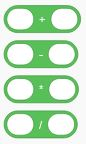Además de los operadores de suma, resta, multiplicación y división podemos comparar dos números mediante los operadores mayor que(>), menor que (<) o igual (=)
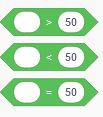
También es posible generar un número aleatorio en el intervalo que especifiquemos. Por ejemplo, si usamos la siguiente instrucción se generará un número aleatorio entre 1 y 200
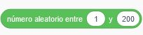
Otra opción que tenemos es usar operadores lógicos: operador AND (y), operador OR (o) y la negación (NO)
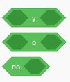
Scratch permite asimismo utilizar funciones matemáticas como las que se usan en otros lenguajes de programación como, por ejemplo:
- Módulo: devuelve el resto de la división entera entre dos números. Por ejemplo, si usamos 14 mod 8 el programa devolverá 6 porque si dividimos 14 entre 8, obtenemos 1 como cociente y 6 como resto. Compruébalo usando estas instrucciones:
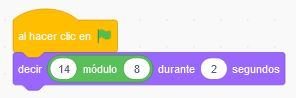
- Redondear: se aplica a un número con decimales para redondearlo. Por ejemplo, si aplicamos la función redondear al valor 7.4 obtendremos un resultado de 7. Si lo aplicamos a 7.6, el programa mostrará un 8. Puedes comprobarlo mediante este programa:
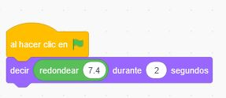
- Otras funciones como suelo (redondeo hacia abajo), techo (redondeo hacia arriba), coseno, seno, tangente,...
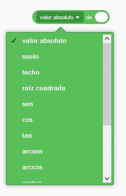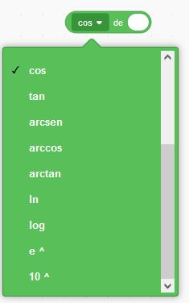
- Crea un programa que muestre los resultados de las siguientes operaciones:
- Suma 7+5
- Resta 10-8
- Multiplica 15*9
- La división de 40 entre 8. Muestra el cociente (5) y el resto (0)
- ¿Cuál sería el resultado de redondear 9.2, 9.5 y 9.9? Compruébalo creando un programa
En Scratch podemos usar las siguientes funciones de tipo texto:
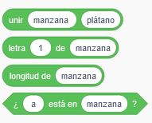
A continuación explicamos cada una de ellas:
- Unir
Permite unir los dos valores que se indiquen. Por ejemplo, el siguiente programa devolvería la unión de "hola" y "mundo", es decir, "holamundo":
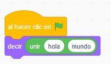
Para dejar un espacio en blanco, habrá que indicarlo expresamente o bien anidando dos instrucciones de unir. Por ejemplo, estas dos opciones obtienen el mismo resultado:
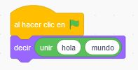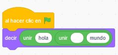
- Letra de ...
Con esta instrucción podemos saber qué letra de un determinado texto ocupa una posición. Por ejemplo, si tenemos el texto "hola mundo" y elegimos la letra 1, se mostrará la "h", si elegimos la letra 2, se obtendrá la "o", y así sucesivamente. Puedes hacer las pruebas modificando el siguiente código:
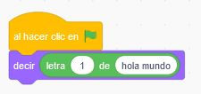
- Longitud
Si queremos saber cuántos caracteres tiene una determinada palabra o un texto, tendremos que usar esta función. Por ejemplo, el siguiente programa devolverá cuatro (la palabra hola tiene cuatro caracteres):
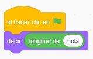
- ... está en ...
Esta función permite saber si la letra que especificamos está en el texto. Por ejemplo, el siguiente programa devolverá verdadero (o true) porque la letra a está en la palabra hola:
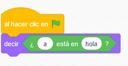
En cambio, si en lugar de preguntar por la letra "a" preguntamos por la "b" el resultado será falso (false):
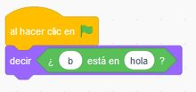
Crea un programa que realice las siguientes tareas (separa cada intrucción mediante la tecla espera 1 segundo):
- Devuelva la última letra del texto "adiós"
- Muestre cuántos caracteres tiene el texto "plátano"
- Diga si la letra "c" está en el texto "hola mundo"
- Muestre si la letra "e" está en el texto "manzana"
Tarea
Implementa un programa que utilice al menos cinco funciones de las que hemos visto en este apartado. Puedes usar las que quieras, pero los datos tienen que ser distintos a los que hemos utilizado en los ejemplos
Obra publicada con Licencia Creative Commons Reconocimiento Compartir igual 4.0